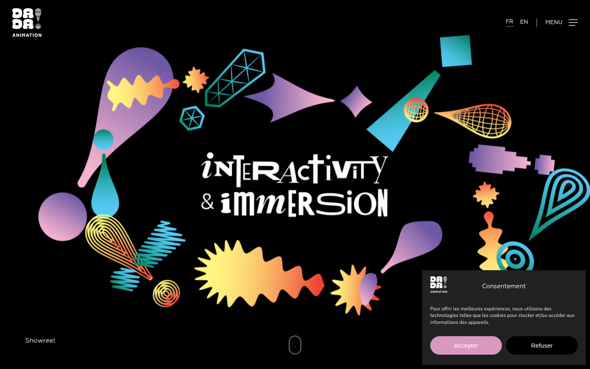
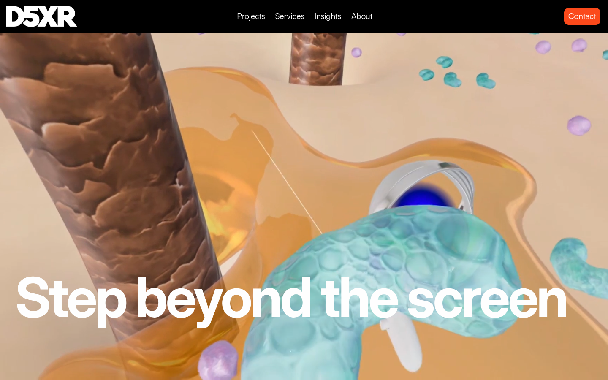
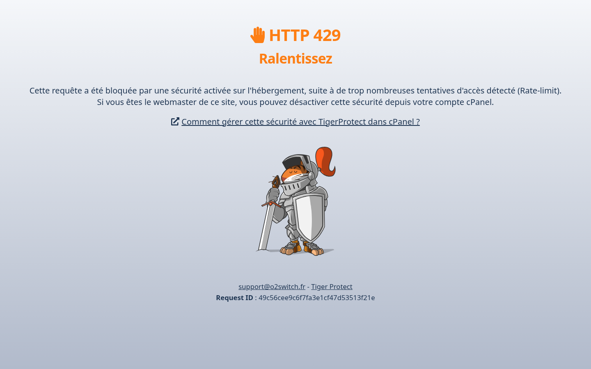

01Vue d'ensemble
Résumé en une phrase : montrer depuis Dakar un studio qui combine animation 3D, XR, jeu et IA, et transformer cette différence en contacts qualifiés.
- Objectif principal (SMART) : publier 1 page de positionnement + 2 études de cas réelles + 4 billets « Insights » en 4 semaines, et obtenir 5 demandes de brief via le formulaire de contact d'ici la fin de la S4.
- Objectif secondaire : version anglaise de la page et des 2 études de cas publiée en même temps que la version française.
- Objectif interne : documenter un process de réponse aux briefs ≤ 48 h ouvrées (tenue avant d'être annoncée).
Preuve : aucun des 3 concurrents n'affiche d'ancre Dakar ni de bilinguisme complet avec preuves — competitive-analysis.md §4.1 (Dada §2.1, D5XR §2.2).
02Cibles
Primaire — directions communication / marketing
Marques, institutions culturelles et bailleurs au Sénégal et en Afrique de l'Ouest, à la recherche d'un partenaire capable de produire contenus immersifs et films d'animation sans passer par l'Europe.
Décideur : directeur·rice communicationStade : considération
Secondaire — diffuseurs & éditeurs
Chaînes, plateformes, studios de jeu et éditeurs qui cherchent un studio local pour coproduire des contenus animés ou expériences XR.
Décideur : responsable éditorial / productionStade : découverte
Douleurs observées
- Devoir sourcer à l'étranger pour de la 3D / du XR (délais, devises, décalage).
- Des offres locales larges mais sans spécialisation technique 3D/XR/IA.
- Des portfolios qui parlent de promesses, pas de projets nommés.
Où ils sont
- LinkedIn (ciblage Sénégal / Afrique de l'Ouest, rôles communication).
- Écosystème local : événements culturels, incubateurs, institutions (contact en présentiel).
- Recherche FR sur « studio animation 3D Dakar », « réalité virtuelle Sénégal ».
Preuve : Dardart capte localement avec un CTA « Démarrer un projet » + chat et une promesse de retour « en 2 minutes » — competitive-analysis.md §2.3 ; D5XR n'existe pas en français — §2.2.
03Messages
Message central : « Des mondes réels et imaginaires, fabriqués à Dakar. »
| Message support | Pour qui / douleur | Preuve à fournir |
|---|---|---|
| Un seul studio : animation 3D, XR, jeu, IA | Décideurs qui doivent sous-traiter 3 prestataires | Page services listant les 4 métiers avec 1 réalisation chacun (projets réels uniquement) |
| Proximité : Dakar, même fuseau, FR & EN | Marques qui veulent des allers-retours courts | Adresse, disponibilités et délai de réponse affichés sur la page contact |
| Preuves par projets nommés | Sceptiques face aux portfolios vagues | 2 études de cas : contexte, rôle d'ATA, livrable, images — 0 chiffre inventé |
| Le local peut être international | Institutions culturelles, diffuseurs | Versions EN des pages + vocabulaire tourné vers l'export |
Preuve : Dada nomme 8 projets et tient un showreel — c'est le standard à atteindre (competitive-analysis.md §2.1) ; Dardart affiche des preuves de disponibilité (2 min, chat) — §2.3.
04Stratégie de canaux
| Canal | Pourquoi celui-là | Format | Effort |
|---|---|---|---|
| Owned — site ATA | Point de vérité : page positionnement + 2 études de cas, bilingues | Page HTML, études de cas, formulaire | Élevé (une fois) |
| Owned — LinkedIn | Endroit où se trouvent les décideurs communication en Afrique de l'Ouest | 1 post/sem. + 1 carrousel capture | Moyen |
| Earned — institutions & événements culturels | Crédibilité locale, introductions, coproductions | Prise de parole, atelier (suite de l'E05) | Élevé |
| Earned — podcasts / médias créa | Storytelling « studio dakarois qui fait de la XR » | Entretien 30 min, FR | Moyen |
| Paid — LinkedIn ciblé | Seulement après publication des preuves ; budget test limité | Sponsoring de 1 post étude de cas |
Preuve : l'ordre Owned → Earned → Paid évite de payer de la visibilité avant d'avoir des preuves à montrer (absence de preuves numériques observée chez D5XR, §2.2).
05Calendrier — 4 semaines
| Sem. | Contenu produit | Canal | Dépendance / jalon |
|---|---|---|---|
| S1 | Page « Mondes de Dakar » (FR + EN) · squelette formulaire brief | Site | Textes validés avant mise en ligne ; bloque tout le reste |
| S2 | Étude de cas n°1 (projet réel) FR + EN · visuels nettoyés | Site + LinkedIn | Accord du client/contrepartie sur les images |
| S3 | Étude de cas n°2 · Insights n°1 « faire de la XR depuis Dakar » | Site + LinkedIn | Dépend à S2 (réutilisation des visuels) |
| S4 | Insights n°2 « 3D + jeu + IA : notre stack » · 1 post sponsorisé test | Site + LinkedIn | Uniquement si S1–S3 en ligne (sinon report) |
| +20 % | Créneaux laissés libres : réaction à l'actualité locale, prise de parole invitée | — | Réactivité, pas de remplissage à tout prix |
06Actifs à produire
| Actif | Priorité | Échéance | Contenu |
|---|---|---|---|
| Page de positionnement FR + EN | P0 | S1 | Promesse, 4 métiers, adresse Dakar, formulaire |
| Étude de cas n°1 | P0 | S2 | Contexte, rôle d'ATA, livrable, visuels réels |
| Étude de cas n°2 | P1 | S3 | Idem, angle technique (XR ou jeu) |
| Billet Insights n°1 / n°2 | P1 | S3 / S4 | 600–900 mots, FR, résumé EN |
| Carrousel LinkedIn (captures) | P1 | S2, S4 | Captures d'écran des projets, 5 vues |
| Signature e-mail bilingue + délai de réponse | P2 | S1 | Réutilise la charte E05 |
Preuve : le P0 est la page + une première preuve : c'est exactement ce qui manque chez D5XR (aucun chiffre ni nom extrait, competitive-analysis.md §2.2).
07Indicateurs de succès
| Indicateur | Cible S4 | Suivi | Cadence |
|---|---|---|---|
| Demandes de brief via le formulaire | 5 (objectif, pas un constat) | Boîte réception + journal de contact | Hebdo (vendredi) |
| Pages FR et EN en ligne | 3 / 3 bilingues | Check-list de publication | À chaque livraison |
| Publications LinkedIn | 4 posts dont 2 études de cas | Statistiques natives LinkedIn | Hebdo |
| Temps de réponse moyen aux briefs | ≤ 48 h ouvrées (mesuré avant d'être annoncé) | Horodatage des échanges | Continu |
| Trafic « Insights » | Tendance en hausse vs S1 (référence : compteur site) | Analytics du site | Bimensuel |
08Budget (répartition indicative, aucun montant fourni)
| Poste | Part | Commentaire |
|---|---|---|
| Production de contenu (pages, études de cas, visuels) | 45 % | Le poste dominant tant que les preuves manquent |
| Distribution (test LinkedIn, sponsoring 1 post) | 25 % | Débloqué seulement après S3 |
| Événementiel / prises de parole locales | 20 % | Atelier, invitations, déplacements |
| Contingence | 10 % | Opportunité ou dépassement |
09Risques & atténuations
| Risque | Atténuation |
|---|---|
| Impossible d'obtenir l'accord pour publier une étude de cas | Choisir dès la S1 un projet où l'accord est déjà plausible ; alternative : étude de cas anonymisée uniquement si le client l'accepte — sinon on ne publie pas |
| Calendrier S1 glisse et bloque les semaines suivantes | La page de positionnement est le seul P0 stricte ; les Insights et le paid sont par nature reportables |
| Annoncer un délai de réponse avant de le tenir | Mesurer le délai pendant 2 semaines (KPI §7) avant toute communication publique |
10Prochaines étapes — 3 actions immédiates
- Cette semaine : rédiger la page « Mondes de Dakar » FR + EN (contenu §3) — elle débloque tout le calendrier.
- Cette semaine : lister les projets réels d'ATA et demander l'accord de publication pour 2 d'entre eux (aucun projet inventé).
- Dès lundi prochain : brancher le formulaire de contact et commencer la mesure du délai de réponse (KPI §7) — 2 semaines de mesure avant d'afficher un engagement public.
AAnnexe — preuves visuelles

screenshots/dada-home-fold.png
screenshots/d5xr-home-fold.png
screenshots/dardart-services-fold.png